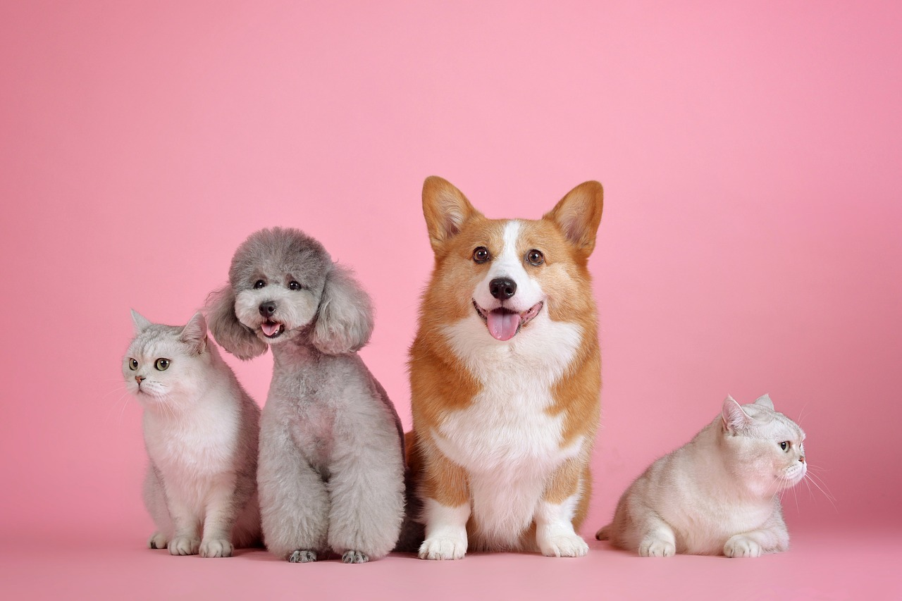

Durham House of Pets
History
Durham House of Pets is a family-run pet supply store that specializes in dogs, cats, and fish. When we opened our first shop in 2005, we were greeted by the very enthusiastic pet owners of Durham, New Hampshire. In 2010, we expanded our store from one to two locations to meet the needs of the community. Our new location also offers Doggy-Daycare and overnight boarding for all your furry friends. We have since developed a very strong relationship with many of the pet owners in this lovely town. We are committed to respecting both owners and the pets themselves. Caring for your animals is our passion and we pride ourselves on that.
Why Us?
Durham House of Pets has accumulated and kept many clients over the years. We are committed to the safety and happiness of your pets and we are prepared to put their needs above ours as a company. We have 24/7 staff that work in the boarding portion of our facility to supervise your 4 legged friends at all times. We also provide you with a report card for your animal detailing their stay at Durham House of Pets. When you decide to purchase products from us, we can assure you that everything is of the highest quality and durability. We make sure all of our products are approved by the American Kenel Association.